Company profile:
RPMC Lasers, Inc.

RPMC Lasers, Inc.
8495 Veterans Memorial Pkwy
O’Fallon MO 63366
United States
| Tel.: | +1 636 272 7227 |
| E-mail: | |
| Website: | www.rpmclasers.com |
| Social media: | Facebook, LinkedIn, Twitter, YouTube |
Company Description
RPMC Lasers Inc (incorporated in 1996) is the leading laser distributor in North America. We offer diode lasers, DPSS laser and laser diode modules, solid-state lasers and amplifiers, and fiber lasers and amplifiers We also offer custom solid-state lasers and laser diode subsystems. We have over 1500 different laser diodes and solid-state lasers from technology leading manufacturers in the US, Europe, and Asia. Our goal is to provide high-quality technical advice with an in-depth knowledge of the products we offer at an attractive value proposition, the best laser at a fair price.
News

2019-01-18
RPMC Lasers Expands into a New Facility to Support Current Growth
RPMC Lasers Inc, the leading distributor of solid-state lasers in North America, is proud to announce the completion of their new facility in O’Fallon, MO. On December 21st the move into the new and improved facility was officially completed, this newly renovated 6,000 square feet facility will enable RPMC lasers to keep up with and accelerate the rapid growth they have been experiencing over the past several years.
This new location features meeting/conference rooms, an expanded shipping, and inventory area, a larger office area to support our ever-growing staff, and an expanded laser lab for testing and applications services. “We are very excited, about the move and are looking forward to utilizing our additional space to facilitate our future growth.” Dean Micke, President of RPMC Lasers, continued, “RPMC spent a considerable amount of time and resources renovating the building and making it perfect for our needs.” RPMC plans to grow their sales team by 30% this year.
Products
| Product | Description |
|---|---|
| advice on product selection | At RPMC, providing you with the top-quality solid-state lasers is only part of our commitment to our customers. We also strive to provide our customers with the resources necessary to choose which laser technology is best suited for your application. In addition to our expert staff who are more than happy to provide you with the service and support you need, we also like to share our knowledge of various laser technologies and applications in our knowledge center. |
| amplifiers (optical …) | 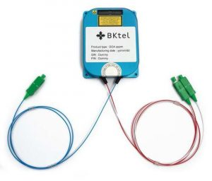 RPMC Lasers offers fiber amplifiers and DPSS amplifiers between 1064 nm and 1550 nm for both continues wave (CW) and pulsed seed sources. These OEM amplifiers are ideal for integration into MOPAs allowing of signal integrity to be maintained while increasing output power. |
| blue lasers | 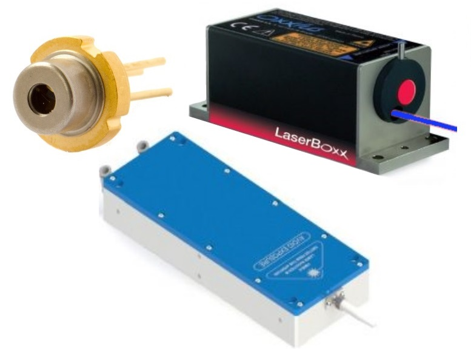 RPMC Lasers offers a wide range of blue diode and DPSS lasers between 420 nm and 499 nm. These offerings include pulsed and CW lasers and modules with packaging at all levels of integration from TO can through turnkey system. |
| broad area laser diodes | RPMC Lasers offers one of the widest wavelength selections of broad area laser diodes available ranging from the UV through the IR. Our multimode laser offerings include multimode single emitters, multi-emitter fiber coupled modules, laser diode bars, laser diode stacks, and VCSELS. |
| diode bars | 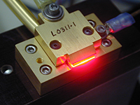 RPMC Lasers offers a wide range of laser diode bars ranging from the red through the IR. These are available unmounted or packaged on a heatsink. We also offer fiber coupled laser diode bars. |
| diode lasers | 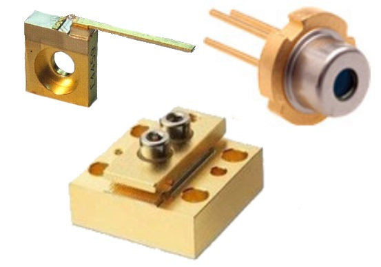 RPMC Lasers offers one of the widest wavelength selections of diode lasers available ranging from the UV through the IR. These products include fiber-coupled and free space single mode diode lasers, multimode single emitters, multi-emitter fiber coupled modules, laser diode bars, laser diode stacks, and VCSELS. |
| diode stacks | 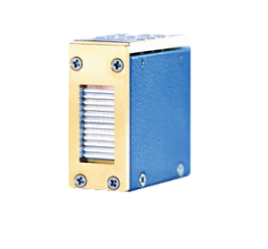 RPMC Lasers offers a wide range of laser diode stacks ranging from the red through the IR. These are available in Microchannel cooled stacks for high power CW operation or conductively cooled stacks for QCW operation. We also offer fiber coupled laser diode stacks. |
| diode-pumped lasers | 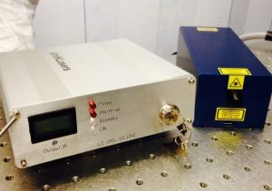 RPMC Lasers offers one of the widest selections of pulsed and CW diode-pumped lasers ranging from the UV through the IR. Our product offering includes CW and pulsed DPSS lasers, fiber lasers, and microchip lasers with a wide range of powers, pulse widths, and pulse repletion rates. Applications include material processing, LIDAR, micromachining, and other others. Use the filters along the left side to narrow the number of lasers to your requirements. More details on the filters at the bottom of the page. |
| distributed feedback lasers | 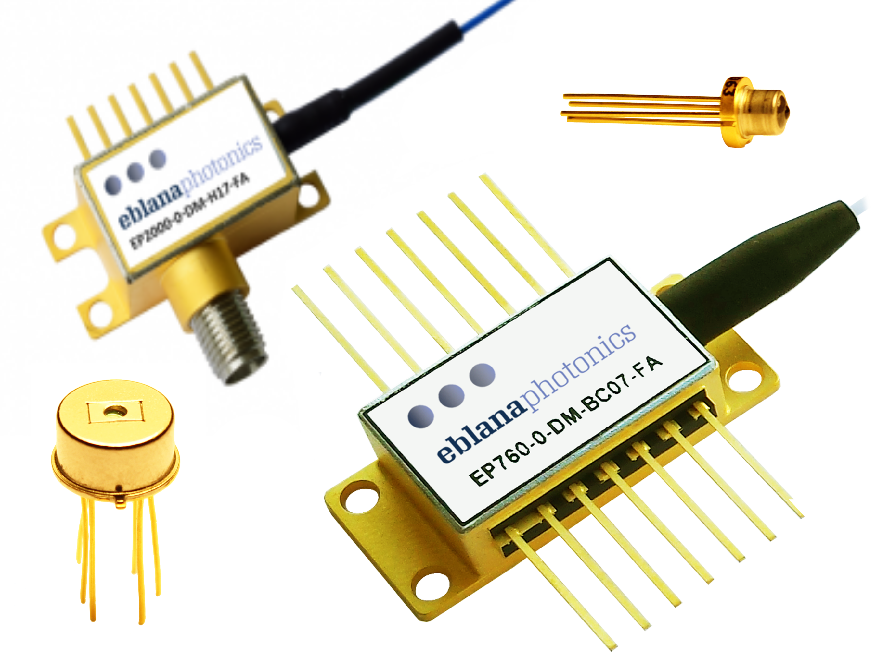 RPMC Lasers offers a wide selection of distributed feedback lasers (DFB). Available in wavelengths from 760 nm to 2.1 μm, these DFB laser diodes offer a tunable single frequency output and are available in both free space and fiber-coupled configurations. |
| external-cavity diode lasers | 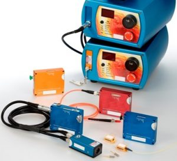 RPMC Lasers offers a wide selection of VBG based external-cavity diode lasers, available in wavelengths from ≈633 nm to ≈1070 nm. These lasers are available both fiber-coupled and free space, and as both OEM components and modules as well as turnkey systems |
| eye-safe lasers |  RPMC Lasers offers a wide range of eye-safe lasers in the ≈1.5 microns in wavelength. These eye-safe offerings include both CW and pulsed diode lasers, DPSS lasers, and fiber lasers. The pulsed lasers are available with both active and passive Q-switching, and the CW options are available in both single- and multi- longitudinal mode |
| femtosecond lasers |  RPMC Lasers offers mode locked femtosecond fiber lasers from 400 fs down to <140 fs, with average powers up to 50 W and wavelengths of 1040, 1035, 920 and 515 nm. |
| fiber amplifiers | RPMC Lasers offers a wide variety of fiber amplifiers at 1.0 μm and 1.5 μm, with pulsed or CW capabilities. Our fiber amplifiers offer up to 40 dBm of output power and possess numerous features, such as low noise, compact package size, and digital control system. |
| fiber lasers | 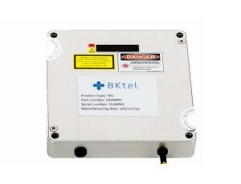 Fiber Lasers are inherently extremely stable, robust, and offer good beam quality. RPMC Lasers offer a wide range of fiber lasers including femtosecond, picosecond, nanosecond, and CW versions. The wavelengths on our fiber lasers range from 515 nm to 1950 nm. |
| fiber-coupled diode lasers (… and related equipment) | 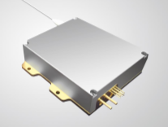 RPMC Lasers offers one of the widest wavelength selections of fiber-coupled diode lasers available in wavelengths from the UV through the IR. These products include multimode single emitters, multi-emitter fiber coupled modules, single mode laser diodes, laser diode bars, and laser diode stacks. |
| fluorescence microscopy (fluorescence microscopes) | 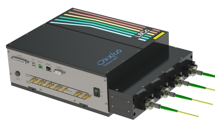 RPMC Lasers offers a wide range of lasers wavelengths for fluorescence microscopy, ranging from the UV though the IR. All of these lasers provide a high quality TEM00 beam profile, and a stable power output. Additionally, RPMC Lasers offers a multi-laser combiner which is ideal for coupling multiple excitation lasers to a single microscope. See also our white paper on How Mode-Locked Lasers Affect the Past, Present, and Future of Two-Photon Microscopy! |
| free-space optical communications (equipment for …) |  RPMC offers a range of lasers, laser amplifiers, and laser diodes used for free-space optical communications. These lasers are available with IR (eye-safe) wavelengths and with different output powers. |
| green lasers | RPMC Lasers offers a wide range of green laser diodes and green DPSS lasers. We offer pulsed and CW lasers and modules with packaging at all levels of integration from TO can through turnkey systems. |
| high-power fiber lasers and amplifiers | RPMC Lasers offers a variety pulsed and CW fiber lasers and fiber amplifiers with wavelengths between 1.0 and 1.5 microns. These fiber lasers can be configured in an OEM or turnkey system, with pulsed versions available from 500 ps up to 30 ns with rep rates from 10 kHz up to MHz. Applications include material processing, LIDAR, micromachining, and other others. |
| holography (equipment for …) | RPMC Lasers offers a wide range of laser wavelengths for holography, ranging from the blue through the IR. All of these lasers over extremely long coherence length (>100 m), stable output power, and provide a high quality TEM00 beam profile. |
| lamp-pumped lasers (… and replacement lamps) |  RPMC Lasers offers a wide variety of flash lamp-pumped lasers with wavelengths from the green to the IR. These lasers are available with both active and passive Q-switches with pulse energy from 1 mJ to 300 J and millisecond to nanosecond pulse widths. Applications include material processing, LIDAR, micromachining, and other others. |
| laser ablation (equipment for …) | 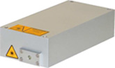 RPMC Lasers offers a wide range of laser wavelengths for laser ablation, ranging from the UV through the IR. These pulsed lasers are available with both active and passive Q-switches with pulse energy from 200 nJ to 300 J and pulse widths from milliseconds to femtoseconds. |
| laser applications | 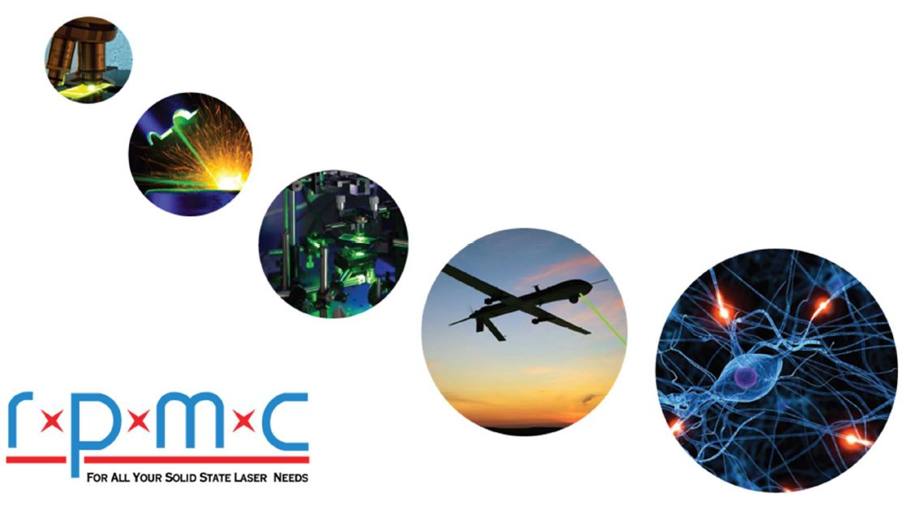 RPMC Lasers offers the widest selection of solid-state lasers in North America, allowing us to service a wide range of laser applications. In order to make the selection process easier for you, we have organized a list of common laser applications. |
| laser cleaning (equipment for …) | RPMC Lasers offers a wide range of q-switched lasers in the IR for laser cleaning. These pulsed lasers are available with both active and passive q-switches with pulse energy from 200 nJ to 300 J at repetition rates up to MHz. |
| laser cutting (equipment for …) | 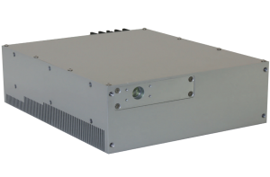 RPMC Lasers offers a wide range of Q-switched lasers for laser cutting with wavelengths ranging from the UV through the IR. These pulsed lasers are available with both active and passive Q-switches with pulse energy from 200 nJ to 300 J at repetition rates up to MHz. |
| laser diode drivers | RPMC Lasers offers a wide range of laser diode drivers for CW, QCW, and pulsed operation. We offer turnkey laboratory laser drivers, rack-mountable laser drivers, and board level OEM drivers with currents ranging from 100 mA to 300 A. Additionally, the pulsed driver boards are capable of producing transform limited pluses down to 250 ps. |
| laser diode modules | 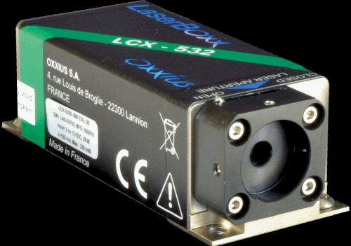 RPMC Lasers offers one of the widest wavelength selections of laser diode modules available ranging from the UV through the IR. Our multimode and single mode diode laser modules are available in both fiber-coupled and free space configurations in both OEM and turnkey packages. |
| laser diodes | RPMC Lasers offers one of the widest wavelength selections of laser diodes available ranging from the UV through the IR. Our offerings include single mode and multimode single emitters, multi-emitter fiber coupled modules, laser diode bars, laser diode stacks, and VCSELS. |
| laser drilling (equipment for …) | RPMC Lasers offers a wide range of Q-switched lasers for laser drilling with wavelengths ranging from the UV through the IR. These pulsed lasers are available with both active and passive Q-switches with pulse energy from 200 nJ to 300 J at rep rates up to MHz. |
| laser heads | RPMC Lasers offers one of the widest wavelength selections of laser diode and DPSS heads available ranging from the UV through the IR. Our multimode and single mode laser modules are available in both fiber-coupled and free space configurations and are ideal for OEM integration into larger systems. |
| laser machining (equipment for …) | 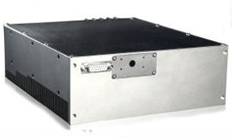 RPMC Lasers offers a wide range of Q-switched lasers for laser machining with wavelengths ranging from the UV through the IR. These pulsed lasers are available with both active and passive Q-switches with pulse energy from 200 nJ to 300 J and pulse widths in the millisecond, nanosecond, picosecond, and femtosecond ranges. |
| laser marking (equipment for …) | RPMC Lasers offers a wide range of pulsed and CW fiber lasers for laser marking in the IR. These fiber lasers are available with powers ranging from 3 W to 105 W, with the pulsed lasers having pulsed repetition rates at fast as 200 kHz allowing for rapid marking. |
| laser material processing (equipment for …) | RPMC Lasers offers a wide range of Q-switched lasers for laser material processing with wavelengths ranging from the UV through the IR. These pulsed lasers are available with both active and passive q-switches with pulse energy from 200 nJ to 300 J and pulse widths in the millisecond, nanosecond, picosecond, and femtosecond ranges. |
| laser microscopy (laser microscopes) | RPMC Lasers offers a wide range of lasers wavelengths for fluorescence and Raman microscopy, ranging from the UV though the IR. All of these lasers provide a high quality TEM00 beam profile, and a stable power output. Additionally, RPMC Lasers offers wavelength-stabilized VBG external cavity diode lasers for Raman microscopy. |
| laser scribing (equipment for …) | 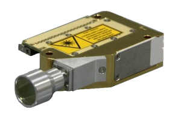 RPMC Lasers offers a wide range of Q-switched lasers for laser scribing with wavelengths ranging from the UV through the IR. These pulsed lasers are available with both active and passive Q-switches with high quality TEM00 beam profile with pulse repetition rates up to MHz. |
| laser soldering (equipment for …) | 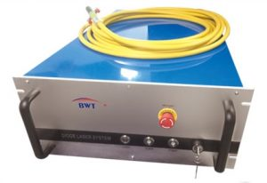 RPMC Lasers offers a wide range of turn-key laser diodes for laser soldering with wavelengths ranging from the UV through the IR. These CW lasers are ideal for a wide range of laser soldering applications. |
| laser spectroscopy (equipment for …) | RPMC Lasers offers a wide range of laser solutions for laser spectroscopy including single longitudinal mode DPSS and diode lasers as well as pulsed fiber lasers, flashlamp pumped lasers, and DPSS laser sources. These lasers are available with multimode and single-mode beam profiles and with power levels ranging from milliwatts to watts. |
| laser welding (equipment for …) | 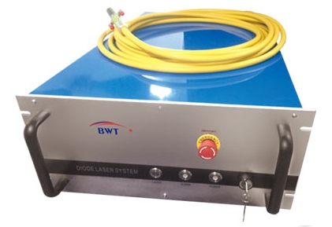 RPMC Lasers offers a wide range of pulsed and CW diode laser stacks for laser welding in the IR wavelength range. These diode stacks are available with power levels of up to 400 watts. |
| laser-induced breakdown spectroscopy (equipment for …) | 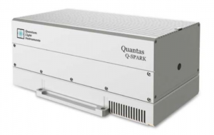 RPMC Lasers offers a wide range of Q-switched lasers for laser-induced breakdown spectroscopy (LIBS) with wavelengths ranging from the UV through the IR. These pulsed lasers are available with both active and passive Q-switches with high quality TEM00 beam profile with pulse energies up to 300 J. |
| lasers | RPMC Lasers offers the widest selection of solid-state lasers in North America, including both pulsed and CW sources ranging in wavelength from the UV through the IR. Pulsed lasers include DPSS lasers, flashlamp lasers, fiber lasers, and micro lasers/microchip Lasers. Additionally, CW laser modules including single mode and multimode DPSS laser and laser diode modules available in both fiber coupled and free space configurations. Applications include material processing, LIDAR, micromachining, and other others. |
| LIDAR (… equipment) | 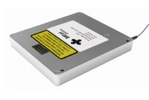 RPMC Lasers offers a wide range of pulsed and CW lasers for LIDAR applications. This includes single frequency CW fiber lasers at 1.5 microns are ideal for Doppler LIDAR and Q-switched lasers are for time-of-flight LIDAR |
| linewidth (narrow-linewidth lasers or equipment for linewidth measurements) | 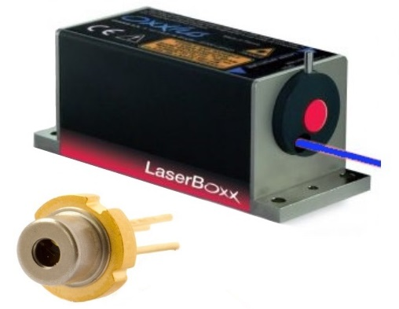 RPMC offers a wide range of narrow linewidth laser diodes and laser modules with wavelengths from 405 nm to 2 μm. These offerings include DFB and DBR diode lasers, external cavity VBG diode lasers, fiber lasers, and DPSS lasers. All are available in both OEM and turnkey packages. |
| medical lasers | 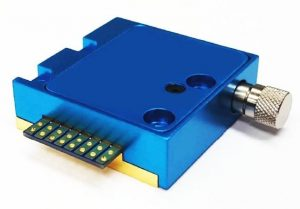 RPMC Lasers offers a wide selection of laser diodes and DPSS lasers used for medical applications. See our applications page for some of the medical applications we support. |
| microchip lasers | 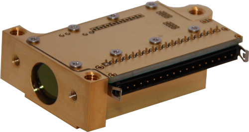 RPMC Lasers offers passively Q-switched microchip lasers that emit high peak power pulses at wavelengths of 1064, 946, 473, 355, 266, and 236.5 nm. These lasers are available with picosecond to nanosecond pulse widths and contain an integral photodiode which can serve as a trigger, for precise timing with detection systems. |
| microlasers | RPMC Lasers offers passively Q-switched microlasers that emit high peak power pulses at wavelengths of 1064, 946, 473, 355, 266, and 236.5 nm. These lasers are available with picosecond to nanosecond pulse widths and contain an integral photodiode which can serve as a trigger, for precise timing with detection systems. |
| nanosecond lasers | RPMC Lasers offers one of the widest wavelength selections of nanosecond lasers available ranging from the UV through the IR. Our offerings include DPSS lasers, flashlamp pumped lasers, fiber lasers, and microchip lasers with pulse energy as high as 300 J and pulse repetition rates up to the MHz range. |
| narrow-linewidth lasers | RPMC offers a wide range of narrow linewidth laser diodes and laser modules with wavelengths from 405 nm to 2 μm. These offerings include DFB and DBR diode lasers, external cavity VBG diode lasers, fiber lasers, and DPSS lasers. All are available in both OEM and turnkey packages. |
| particle image velocimetry | RPMC Lasers offers a wide range of visible and IR Q-switched lasers for particle image velocimetry, with the most common option being the q-switched 532 nm laser. These lasers can be either flashlamp pumped or DPSS and typically provide pulse repetition rates up to 100 Hz and pulse energies up to 400 mJ. |
| picosecond lasers |  RPMC Lasers offers one of the widest wavelength selections of picosecond lasers available ranging from the UV through the IR. Our offerings include DPSS lasers, fiber lasers, and microchip lasers with pulse energy as high as 100 mJ and pulse repetition rates up to the MHz range. |
| Pockels cell drivers | RPMC Lasers offers a wide range of Pockels cell drivers for high-speed electro-optic shutters and active Q-switching. Our Pockels cell drivers utilize solid-state MOSFET technology which provides excellent trigger noise immunity and a smooth output waveform. |
| pulsed lasers | RPMC Lasers offers a wide range of pulsed laser sources with wavelengths from the UV through the IR. These offerings include DPSS lasers, flashlamp lasers, fiber lasers, and micro lasers/microchip lasers with both active and passive Q-switches. |
| Q-switched lasers | RPMC Lasers offers a wide range of Q-switched laser sources with wavelengths from the UV through the IR. These offerings include DPSS lasers, flashlamp lasers, fiber lasers, and micro lasers/microchip lasers with both active and passive Q-switches. |
| Raman spectroscopy (equipment for …) | RPMC Lasers offers a wide range of wavelength stabilized and singe frequency laser sources for Raman spectroscopy. Additionally, a wide range of pulsed laser sources are available for coherent Raman spectroscopy such as SRS and CARS. |
| red lasers |  RPMC Lasers offers a wide range of red diode and DPSS lasers between 620 nm and 699 nm. We offer pulsed and CW lasers and modules with packaging at all levels of integration from TO can through turnkey system. |
| RGB sources | RPMC Lasers offers one of the widest selections of RGB sources on the market with hundreds of diodes and DPSS laser available in the red, green and blue wavelength ranges. These lasers are available both single mode and multimode, and with fiber-coupled or free space output configurations. |
| seed lasers | 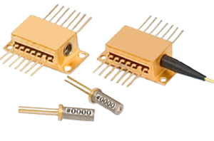 RPMC Lasers offers one of the wide selections of single frequency lasers for injection seeding fiber lasers and solid-state lasers. These offerings are availed either open beam or fiber coupled and can be paired with laser diode drivers to provide transform limited picosecond seed sources for Q-switched fiber lasers. |
| semiconductor lasers | RPMC Lasers offer one of the widest wavelength selections of semiconductor lasers available ranging from the UV through the IR. These products include fiber-coupled and free space single mode diode lasers, multimode single emitters, multi-emitter fiber coupled modules, laser diode bars, laser diode stacks, VCSELS. |
| single-frequency lasers | RPMC offers a wide range of single frequency laser diodes and laser modules with wavelengths from 405 nm to 2 μm. These offerings include DFB and DBR diode lasers, external cavity VBG diode lasers, fiber lasers, and DPSS lasers. All are available in both OEM and turnkey packages. |
| solid-state lasers | RPMC Lasers offers one of the widest selections of pulsed and CW diode-pumped solid-state lasers ranging from the UV through the IR. Our solid-state laser offering includes CW and Pulsed DPSS Lasers, CW and pulsed fiber lasers, and microchip lasers with a wide range of powers, pulse widths, and pulse repletion rates. |
| surface-emitting semiconductor lasers | 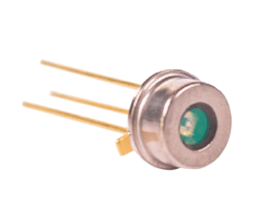 RPMC Lasers offer a wide selection of vertical cavity surface emitting lasers (VCSELs) in the 850 nm, 860 nm, 940 nm, and 975 nm, with 1550 nm under development. Our VCSELs are available in standard packages and are capable of being delivered in reasonable quantities in relatively short order. Higher volumes, specific packaging, and alternate power requirements are possible. |
| temperature controllers | 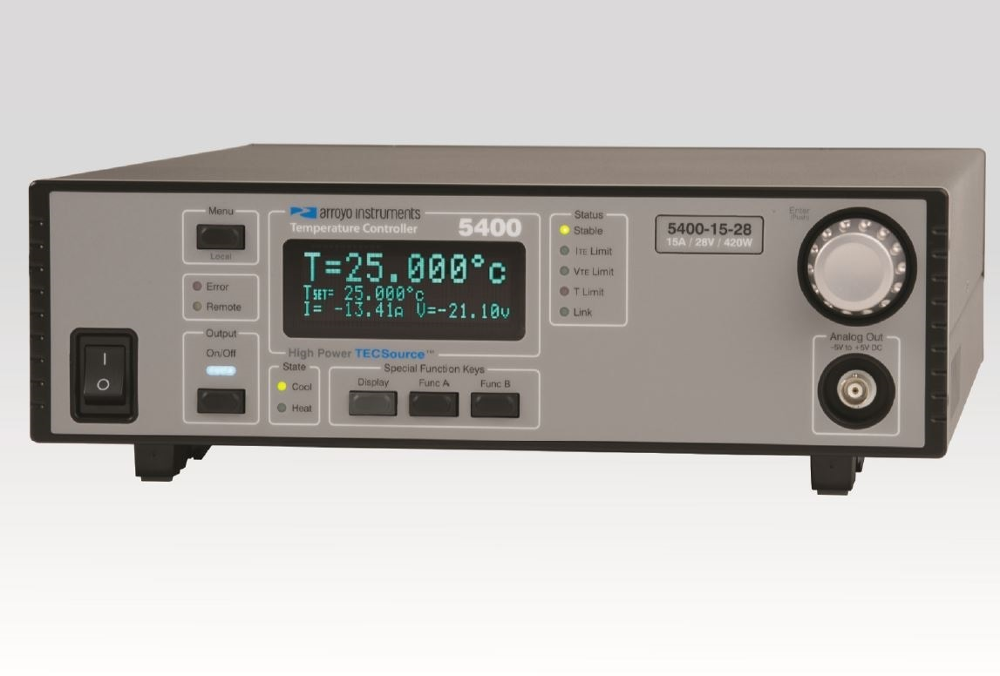 RPMC Lasers offers a wide range of temperature controllers available as desktop units, combo units including the laser diode driver, and modules. The temperature controller interface provides full control over your temperature controller, providing all the settings, limits, and adjustments of the instrument in an easy-to-use Windows application. |
| time-of-flight measurements (equipment for …) | 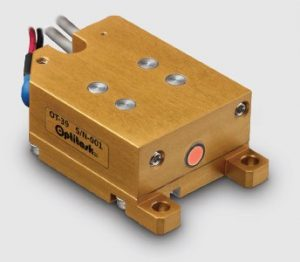 RPMC Lasers offers a wide range of compact pulsed laser sources for time-of-flight distance measurements. These offerings include a wide variety of short pulsed lasers, but the most commonly used in range TOF range finding is Er:glass at 1.5 microns. |
| tunable lasers | 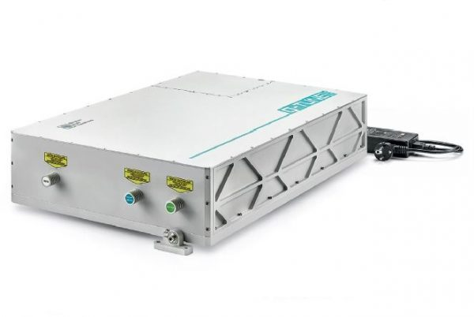 RPMC Lasers offers a tunable DPSS laser that uses an Optical Parametric Oscillator (OPO) to produce tunable wavelengths in 410 – 2300 nm range. Its advanced laser design results in a compact, user-friendly turnkey system that requires little maintenance. It integrates all laser electronics into the housing and there are no chillers or bulky power supplies needed. |
| ultrafast lasers | RPMC Lasers offers ultrafast mode locked fiber lasers in the IR and green wavelengths. These lasers offer pulse widths as low as 170 femtoseconds and pulse repetition rates upward of 80 MHz, making them ideal for nonlinear optics and multiphoton spectroscopy. |
| ultraviolet lasers | RPMC Lasers offers a wide range of ultraviolet diode and DPSS lasers between 200 nm and 389 nm. These offerings includer pulsed and CW lasers and modules with packaging at all levels of integration from TO can through turnkey system. |
| ultraviolet light (… sources) | Ultraviolet lasers, laser diodes, and laser modules for sale are available in wavelengths from 200 nm to 389 nm. Applications for UV laser diode modules include micromachining, medical, military, and many others. |
| vertical cavity surface-emitting lasers (VCSELs) | RPMC Lasers offer a wide selection of vertical cavity surface emitting lasers (VCSELs) in the 850 nm, 860 nm, 940 nm, and 975 nm, with 1550 nm under development. Our VCSELs are available in standard packages and are capable of being delivered in reasonable quantities in relatively short order. Higher volumes, specific packaging, and alternate power requirements are possible. |
| websites on photonics and laser technology | At RPMC, providing you with the top-quality solid-state lasers is only part of our commitment to our customers. We also strive to provide our customers, and the community as a whole, with the resources necessary to choose which laser technology is best suited for your application. In addition to our expert staff who are more than happy to provide you with the service and support you need, we also like to share our knowledge of various laser technologies and application in our knowledge center. |
| yellow and orange lasers | RPMC Lasers offers a wide range of yellow DPSS lasers between 560 nm and 589 nm. These offerings include CW and modulable lasers and modules with packaging at all levels of integration from OEM modules through turnkey system. |
Promotions
Information of RPMC Lasers Appears on the Following Pages
Company profile (this page)
Pages with Suppliers for Products
advice on product selection, amplifiers, blue lasers, broad area laser diodes, diode bars, diode lasers, diode stacks, diode-pumped lasers, distributed feedback lasers, external-cavity diode lasers, eye-safe lasers, femtosecond lasers, fiber amplifiers, fiber lasers, fiber-coupled diode lasers, fluorescence microscopy, free-space optical communications, green lasers, high-power fiber lasers and amplifiers, holography, lamp-pumped lasers, laser ablation, laser applications, laser cleaning, laser cutting, laser diode drivers, laser diode modules, laser diodes, laser drilling, laser heads, laser machining, laser marking, laser material processing, laser microscopy, laser scribing, laser soldering, laser spectroscopy, laser welding, laser-induced breakdown spectroscopy, lasers, LIDAR, linewidth, medical lasers, microchip lasers, microlasers, nanosecond lasers, narrow-linewidth lasers, particle image velocimetry, picosecond lasers, Pockels cell drivers, pulsed lasers, Q-switched lasers, Raman spectroscopy, red lasers, RGB sources, seed lasers, semiconductor lasers, single-frequency lasers, solid-state lasers, surface-emitting semiconductor lasers, temperature controllers, time-of-flight measurements, tunable lasers, ultrafast lasers, ultraviolet lasers, ultraviolet light, vertical cavity surface-emitting lasers, websites on photonics and laser technology, yellow and orange lasers
Encyclopedia Articles
amplifiers, blue lasers, broad area laser diodes, diode bars, diode lasers, diode stacks, diode-pumped lasers, distributed feedback lasers, external-cavity diode lasers, eye-safe lasers, femtosecond lasers, fiber amplifiers, fiber lasers, fiber-coupled diode lasers, fluorescence microscopy, free-space optical communications, green lasers, high-power fiber lasers and amplifiers, lamp-pumped lasers, laser applications, laser diode drivers, laser diode modules, laser diodes, laser heads, laser marking, laser microscopy, lasers, linewidth, microchip lasers, nanosecond lasers, narrow-linewidth lasers, picosecond lasers, pulsed lasers, Q-switched lasers, red lasers, RGB sources, seed lasers, semiconductor lasers, single-frequency lasers, solid-state lasers, surface-emitting semiconductor lasers, time-of-flight measurements, tunable lasers, ultrafast lasers, ultraviolet lasers, ultraviolet light, vertical cavity surface-emitting lasers, yellow and orange lasers
Profiles of Other Suppliers
RPMC Lasers is shown as alternative supplier on 449 pages of other suppliers not having an ad package.
Other Pages
The banner which is included in the ad package will randomly appear on various pages.
On various pages, a banner can randomly show up which displays a random selection of logos of suppliers with an ad package.